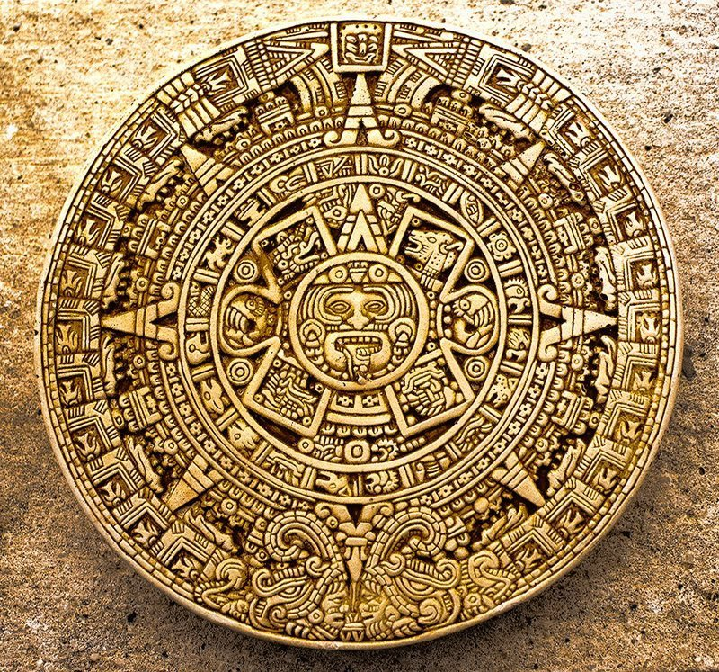

| portal cultura maya | cosmogonia maya | dioses mayas | sagrado |
|---|---|---|---|
| chaac | dios de los relampagos | ixchel | diosa del amor |
| kauil | dios del fuego | yum kaax | dios del maiz |
| hunab ku | padres de los dioses | itzamna | dios del cielo |
| ek chuah | dios del cacao | buluc chabtan | dios de la guerra |
informacion
Los dioses mayas más importantes
Existen tres textos mayas que sobrevivieron a la quema de los españoles (Popol Vuh, Chilam Balam, y Las Crónicas de Chacxulubchen); son de donde se ha extraído la mayor parte de la información que se tiene hasta ahora de dicha cultura y su religión. Partiendo de estos documentos, a continuación revisaremos un listado de los dioses mayas más influentes.


una profesia del calendario maya. en el año 2012 los seres humanos entraran en una nueva civilizacion.
segun los mayas el 21 de diciembre del año 2012 es el fin de esta civilizacion humana, ellos no mencionaron la causa. pero hay una cosa clara,el ultimo dia no significara el arribo de ninguna calamidad; en cambio implica una nueva conciencia cosmica y una transicion espiritual hacia la nueva civilizacion